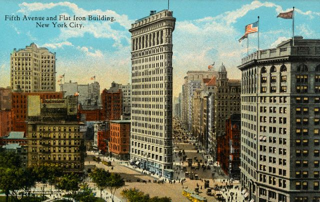

Nov. 24th New York, New York! --
When I was a kid, I was sure I'd live in Manhattan when I grew up. This
vision was a composite of practicality and romance. The dreary adult
world dictated making a living; best as I could tell, most jobs worth
having were in Manhattan. I considered my parents' daily commute to the
city. Didn't they know that it would be a whole lot easier not to take the train back to Dobbs
Ferry at night when they just turned around and went back to the city the next day?
Sheesh.
The TV show "That Girl"
deserves credit, too. Its main character, Ann Marie, lived a life that
was my pre-teen ideal: the aspiring actress rarely worked but had no
problem paying rent on her cleverly decorated, surprisingly spacious
Upper West Side apartment. That left her plenty of time for dropping
her fabulous wardrobe off at the dry cleaners and undertaking
all-consuming beauty rituals, like hair ironing or fashioning empty
soup cans into giant hair rollers. Sure, she went on the occasional
audition. But in retrospect, you can't help but wonder if her TV
boyfriend, Don
Hollinger, was her sugar daddy. Their relationship was so chaste that
if he was, he was a bigger sucker than the lolly of the same name.
Still, my eleven year-old self thought Don, the sexually repressed
journalist, was perfect boyfriend material.
Sex complicates everything. Following my true love to Utah put
Manhattan out of the running for a couple of decades. I didn't live in
a "real" city until I was in my mid-20s, when we moved to San
Francisco. There was no going back: I've always been happiest in
high-density places. Amazon lured us to Seattle, where we definitely
feel at home. But NY calls often and loudly.
On this trip we're fulfilling my kid fantasy--spending a couple of
months in the city that never sleeps, living in an apartment on the
Upper West Side. Driving up to our building, right across the street
from Julliard and Lincoln Center, felt like arriving with a capital A.
We'd been anticipating this moment since leaving Seattle. I've been
waiting for it since I was eleven.
Imagine our surprise, then, as we pulled up to 155 West 66th Street and
found New York's finest stringing yellow police tape across the
entrance to our building. The message was undeniable:
"Do Not Cross * NYPD * Do Not Cross * NYPD * Do Not Cross* NYPD"
We studied the scene to make sure there was no obvious immediate,
danger.
None sighted.
We stepped out of the car. Rufus joined us, sniffing madly and
flinching
at the traffic noise.
Chaos was quickly building around the blocked entrance. Folks who lived
in the building seemed jaded, as if this happened weekly. More than
anything, they
wanted in. Cell phones were whipped out of pockets and purses, each a
tiny broadcast center from the mystery scene on the sidewalk. Calls
started with a loud "I'm outside. The police
won't let me in."
"Excuse me?" I called to the doorman, who tried to approach me. "We're
moving in today?"
He shrugged.
Two cops stood by the door.
"Sir?" I called to one of the cops. "We just arrived from out of town.
We're moving in. Are we allowed into the building?"
"If you go in you don't come out," he replied tersely.
A welcome with all the warmth of The Roach Motel's tagline. What with
schlepping stuff from our car, it wasn't going to do.
"What happened?" I asked.
He steadfastly and intentionally ignored me and strolled on down the
sidewalk, toward Balducci's, the gourmet grocery next door. Police tape
blocked off their entrance, too, though people toting groceries were
allowed to leave the store. A new, nastier cop now stood guard outside
our building.
Some folks marched up to the tape and in that you-can't-mean-me way, lifted it and headed for the door.
"CAN'T YOU READ?!" the cop bellowed at one man.
"But I live here," the line
crosser claimed, beyond indignant.
"IT SAYS 'DO NOT CROSS!' THAT MEANS YOU!" the cop reiterated.
"But I have tickets to a concert!" the crosser cried, "They're inside!"
The cop was unmoved by culture denied.
"What happened?" the crosser asked.
The cop was as tight-lipped as he had been with me. Just because you
live in a building doesn't give you the right to know why you can't
enter it.
"Well, how long will it be?" the crosser pressed him.
"It could be an hour," the cop spat back. "It could be 24 hours."
Hmmm.
Eileen rode up with us from DC, having scored a time-off trifecta:
three days in a row. She had been milling about, quizzing a news team
that rolled up when we did. They'd heard that there had been a stabbing
at a nearby school, Martin Luther King, Jr. High School. (Not a Junior
High School.) The stabber--or stabbers--had
scattered into the neighborhood. Unless they had dropped in to have
their knives sharpened, Balducci's seemed an unlikely place for the
assailants to hide out. And our building? Who knows?
We were just considering camping out at my sister's, 20 miles north, as
the doorman came to the edge of the police line. He told me there was
another entrance to the building from the other side--a door that
wasn't blocked.
Did this make any sense at all?
There was one side of the building that refused entry and another that
said "c'mon in!?"
Spending too much time with this notion wasn't in our best interests,
so we drove around the block to the howdy side on Broadway, where we
were met by the doorman, who had thoughtfully brought a cart for all
our
stuff. We unpacked the trunk and snaked through a hallway to the lobby
that we'd been staring at from the wrong side of closed glass doors for
the last 30 minutes. Happy to be inside, we signed a few papers and
headed up in the elevator to our little slice of Manhattan.
Eileen ventured out for wine and a corkscrew. Rufus sniffed the
perimeter of the rooms. We wandered about our digs feeling just a
little dazed, opening cupboards and closets. The place was long, narrow
and bright--with lots of windows in the living room. It fell squarely
between an apartment and a hotel, simply decorated but comfortable. We
pulled open our living room and kitchen curtains and looked directly
across the street into Julliard, where room after room of dancers were
taking class. The
next level up, musicians stood in separate practice rooms; one was
playing a bassoon, another a clarinet. We were charmed. Out of the
other side of our living room there was a perfect view into the belly
of the beast: a massive Barnes & Noble, packed with shoppers. To
the
right, down Broadway, a choke of rush hour traffic stretched all the
way down to Columbus Circle, marked by the giant red "Biography" sign. We had unpacked
by the time
Eileen came back, bearing not only wine but a bunch of lovely yellow
French
Tulips. What seemed like an awful lot of stuff to
stick in our trunk didn't look like much of anything in our closets
here. Eileen reported that all traces of the police were now gone and
the parallel universe entrance we had used to get into the building was
now
closed up.
The next day brought more settling in: exploring the neighborhood,
getting
our gym membership set up (and actually working out), buying groceries
and soap. Eric's brother Karl was in town for the day, on his way from
Santa Barbara to Boston to celebrate Thanksgiving with John Eric,
Virginia, Sarah, and their mom. We met up with Karl for a good hike
through Central Park. Rufus approved, though he wasn't wild about the
two traffic-filled blocks between here and there. Eileen got to peek at
The Dakota and we dropped Karl off at The Met.
The afternoon was waning and we had a party to go to: young Henry
Roseman was having his first east coast
meet-and-greet at Christina and Andrew's in The Ansonia,
one of New York's grand Beaux-Arts apartments, long
a residence for artists, musicians and free spirits. (Toscanini lived
here. So did Caruso and Stravinsky.) It was also once home to The
Continental Baths,
where lovely young men seeking equally lovely young men were serenaded
by Bette Middler. This morphed into Plato's Retreat, a 1970's swinger's
club. Today, the lobby is a
sea of families and strollers. Though pieces of the past live on:
Christina tells me it's still
written into the leases of the long-term resident musicians that
they
can practice their instruments between 9 a.m. and 9 p.m.
It was such a treat to see all
Rosemans and Tatlows. It had been a month since we'd seen Henry. He
looked great--so much bigger and in far better command of his
extremeties. And he was smiling a big gummy smile! Neil and Rose
appeared to be handling their extremeties well, too. Neil's hair was
much shorter and quite becoming it was, too. Rose looked beautiful, as
always. Seeing them here seemed both odd and perfectly natural. It also
drove home how much we missed them: they were just in town from Philly
for a couple of hours. Call us greedy, but having to share them with
others, two hours was definitely
not enough.
Andrew and Christina's place was a gem. They've done much to rennovate
it and the outcome is pretty swell. And they threw a wonderful
party--very tasty food and champagne and great company with lot of
folks
from Rose's Manhattan work life: PBS and Children's Television Workshop
were well represented. Also in attendance, a friend of Neil and Rose's
who works for NASA, who had just played the straight man to an
interview by The
Daily Show's Rob Corddry. The poor guy was asked to defend the sun.
When he said it was our only source of heat and light, Cordry responded
as you might expect. "What about these?!?" he asked, pulling out a
flashlight and a lighter to prove
him wrong. Amused, well fed, and bittersweet about our brief
Tatlow/Roseman exposure, we reconvened for dinner with Karl. Having no
luck
getting a table at Cafe
Luxemborg dined splendidly next door at Compass.
Wednesday, the day before Thanksgiving, we drove north to take a peek
at the Valley Cottage house's progress, which is pretty impressive.
Move-in date for Ken and Christine is now in May and it's going to be
quite a place when that day finally arrives. Jeffrie and Mark and his
crew are doing such a fine job that the reconstructed house will stand
for another 300 years. We stopped in to say "hi" to my folks in Dobbs
Ferry and then hightailed it back to the city: Eileen needed to catch a
late train back to DC. But not before we stopped at the Carnegie Deli for our NYC food
tradition: splitting a honking big platter 'o pastrami, corned beef and
brisket with a half-sour pickle chaser. Always, the waiter reminds us
that it will cost $6 to share. Always, we say, yes, we know. (Believe
me, a platter there easily feeds
three.) Well fortified by the wall of meat we had just consumed, we
hoofed it up to Central Park. Eileen had a hankering to see Tavern
on the Green, so we stopped in for an Irish Coffee. The drink was
fine; the bar could have been anywhere and was ungodly expensive. Then
we continued uptown where yet another childhood fantasy of mine was
unfolding: the inflating of the Macy's
Day Parade balloons. (I'm not all that much into the parade, but
I've always had a thing for those surreal balloons.)
The walk there was challenging: the sidewalks were crowded with folding
metal bleachers, forcing us to share the road with traffic or to walk
on the benches themselves. We alternated between the two until we
reached 79th Street and Central Park West, where we were channelled
into barricaded, one-way walking chutes with the shuffling,
balloon-crazed masses. Bad memories of The Bridge Walk, an event
celebrating the Golden Gate Bridge's 50th Anniversary back in 1987 came
flooding back. We had all been there, though not together.
And we all had experienced the horror
of human gridlock--of being stuck, surrounded by people and unable
to move. Our nightmare lasted for about an hour, which really is a long
time to stare at the back of a stranger's neck. The Bridge was closed
to automotive traffic and open to people. But the brain trust running
the thing didn't think to set up human traffic patterns, and so, things
came to a grinding halt. It turns out suspension bridges aren't built
to have a huge amount of weight standing on them all at once--they're
built to have weight passing over them. There were photos from the
event
of the bridge bowing downward at its center. Lots of speculation
followed in the press for weeks after about the likelihood of the
bridge collapsing. It
didn't go without notice that it would have been a particular shame to
break the bridge when it was filled with the folks who made San
Francisco the most fun--the ones who turned out for the parties the
town was so fond of throwing.
Back on balloon watch on the Upper West Side things were moving, albeit
slowly. 79th
Street was a madhouse of people.
Stopping to really observe inflation wasn't an option.
Gigantic missle-like
tanks of helium lined the street.
Occasionally, a giant blast of gas would hiss into a balloon. But the
notion I'd had of watching them slowly take form wasn't going to be a
possibility; security kept us moving.
"Pikachu will take 40 minutes to
inflate. Move along!" they
cried.
Disappointing.
We almost gave up after the first block, but found things moving a
little better heading for 81st, where
another block of balloon inflation awaited along side
of The Museum of Natural History.
This was far better--you could
actually walk up to the edge of the road and get a peek at the action.
And the balloons here were far more satisfying. There's something about
an inflated animal balloon contained by
a giant net
that's just funny. Evil Ronald McDonald
was laid out near good
'ol Charlie Brown. Jimmy Neutron kept them company. And
there we lots and lots of Macy's Stars.
Our favorite? It was hard not to fall for this unlikely pairing of Kermit and Cloe the Holiday Clown.
As a man behind us commented, "This is from Kermit's early film work."
You never know what a muppet is up to in his off hours.
STATS:
Miles travelled to date: 4,000
Second largest consumer of helium in the U.S. : Macy's
First largest consumer of helium in the U.S. : The U.S. Military
Snoozing at: The
Phillips Club (through January 2004)
P.S. We'll continue to add entries to the site from time to time as we
do stuff in NY that merits a story or some snapshots. We love hearing
from you--you've been wonderful friends to read so much and send
appreciative e-mail.
Page composition by Mozilla Composer
Image manipulation by The Gimp